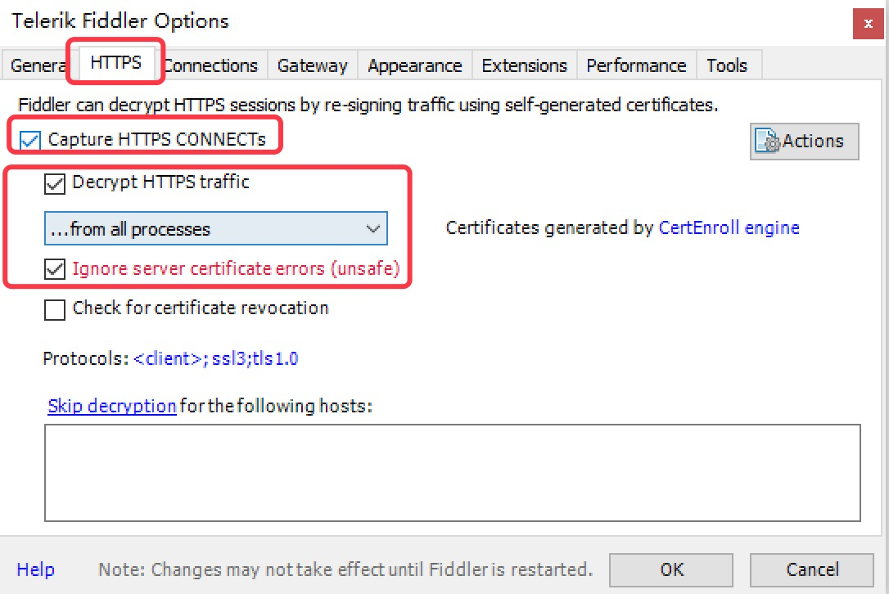
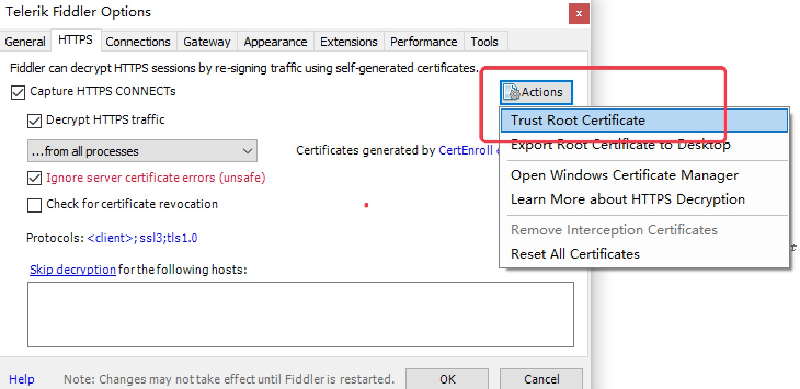

抓包工具fiddler
HTTP代理神器Fiddler
Fiddler是一款强大Web调试工具，它能记录所有客户端和服务器的HTTP请求。 Fiddler启动的时候，默认IE的代理设为了127.0.0.1:8888，而其他浏览器是需要手动设置。
工作原理
Fiddler 是以代理web服务器的形式工作的，它使用代理地址：127.0.0.1，端口：8888
Fiddler抓取HTTPS设置
启动Fiddler，打开菜单栏中的 Tools > Telerik Fiddler Options，打开“Fiddler Options”对话框。

对Fiddler进行设置：
打开工具栏->Tools->Fiddler Options->HTTPS，
选中Capture HTTPS CONNECTs (捕捉HTTPS连接)，
选中Decrypt HTTPS traffic（解密HTTPS通信）
另外我们要用Fiddler获取本机所有进程的HTTPS请求，所以中间的下拉菜单中选中...from all processes （从所有进程）
选中下方Ignore server certificate errors（忽略服务器证书错误）

为 Fiddler 配置Windows信任这个根证书解决安全警告：Trust Root Certificate（受信任的根证书）。

Fiddler 主菜单 Tools -> Fiddler Options…-> Connections
选中Allow remote computers to connect（允许远程连接）
Act as system proxy on startup（作为系统启动代理）
重启Fiddler，使配置生效（这一步很重要，必须做）。
Fiddler 如何捕获Chrome的会话
安装SwitchyOmega 代理管理 Chrome 浏览器插件

如图所示，设置代理服务器为127.0.0.1:8888
通过浏览器插件切换为设置好的代理。
Fiddler界面
设置好后，本机HTTP通信都会经过127.0.0.1:8888代理，也就会被Fiddler拦截到。

请求 (Request) 部分详解
- Headers —— 显示客户端发送到服务器的 HTTP 请求的 header，显示为一个分级视图，包含了 Web 客户端信息、Cookie、传输状态等。
- Textview —— 显示 POST 请求的 body 部分为文本。
- WebForms —— 显示请求的 GET 参数 和 POST body 内容。
- HexView —— 用十六进制数据显示请求。
- Auth —— 显示响应 header 中的 Proxy-Authorization(代理身份验证) 和 Authorization(授权) 信息.
- Raw —— 将整个请求显示为纯文本。
- JSON - 显示JSON格式文件。
- XML —— 如果请求的 body 是 XML 格式，就是用分级的 XML 树来显示它。
响应 (Response) 部分详解
- Transformer —— 显示响应的编码信息。
- Headers —— 用分级视图显示响应的 header。
- TextView —— 使用文本显示相应的 body。
- ImageVies —— 如果请求是图片资源，显示响应的图片。
- HexView —— 用十六进制数据显示响应。
- WebView —— 响应在 Web 浏览器中的预览效果。
- Auth —— 显示响应 header 中的 Proxy-Authorization(代理身份验证) 和 Authorization(授权) 信息。
- Caching —— 显示此请求的缓存信息。
- Privacy —— 显示此请求的私密 (P3P) 信息。
- Raw —— 将整个响应显示为纯文本。
- JSON - 显示JSON格式文件。
- XML —— 如果响应的 body 是 XML 格式，就是用分级的 XML 树来显示它 。
通过Fiddler进行手机抓包
通过Fiddler抓包工具，可以抓取手机的网络通信，但前提是手机和电脑处于同一局域网内（WI-FI或热点），然后进行以下设置：
用Fiddler对Android应用进行抓包
打开Fiddler设置
在
Connections里设置允许连接远程计算机，确认后重新启动Fiddler在命令提示符下输入
ipconfig查看本机IP- 打开Android设备的“设置”->“WLAN”，找到你要连接的网络，在上面长按，然后选择“修改网络”，弹出网络设置对话框，然后勾选“显示高级选项”。
- 在“代理”后面的输入框选择“手动”，在“代理服务器主机名”后面的输入框输入电脑的ip地址，在“代理服务器端口”后面的输入框输入8888，然后点击“保存”按钮。
- 启动Android设备中的浏览器，访问网页即可在Fiddler中可以看到完成的请求和响应数据。
用Fiddler对iPhone手机应用进行抓包
基本流程差不多，只是手机设置不太一样：
iPhone手机：点击设置 > 无线局域网 > 无线网络 > HTTP代理 > 手动：
代理地址(电脑IP)：192.168.xx.xxx
端口号：8888
浏览器打开 192.168.x.x 安装证书
关于本机 启用证书